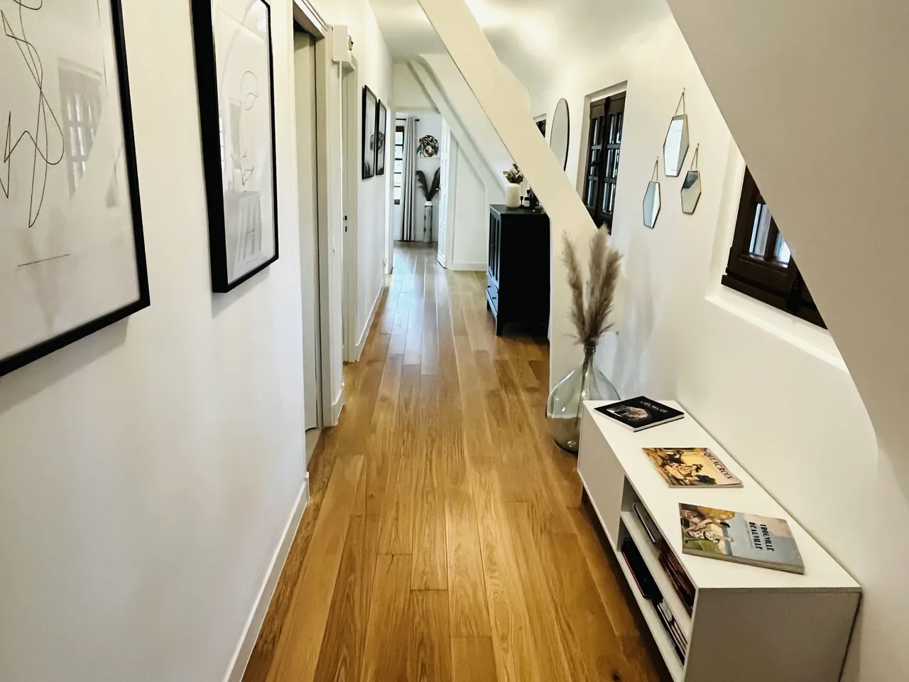
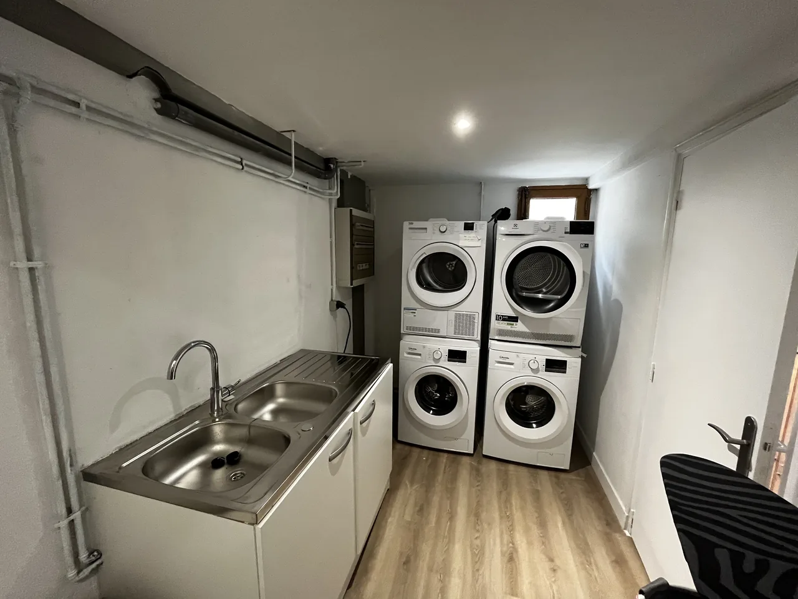
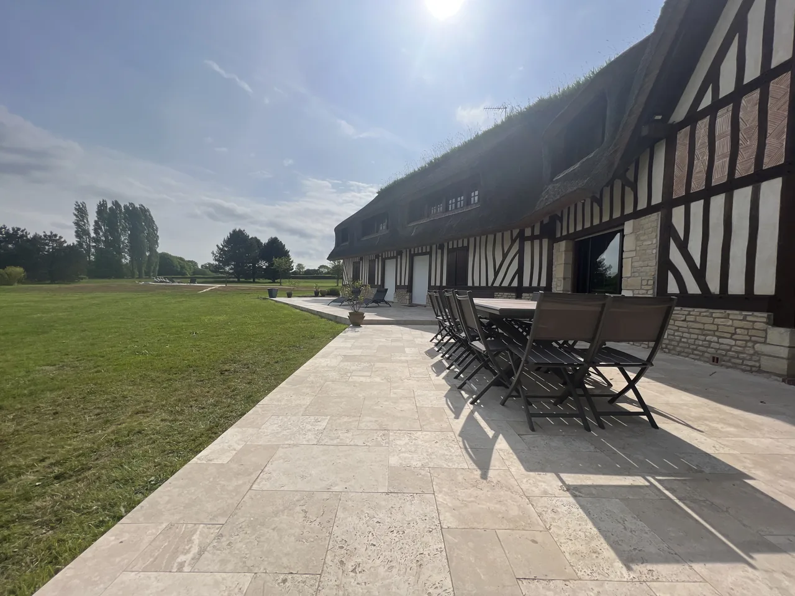
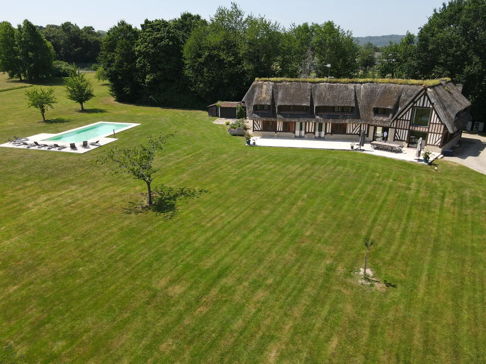

Une chaumière au cœur du parc
On arrive par une longue allée gravillonnée
Passé le grand portail, l’allée longe les massifs fleuris. La maison apparaît peu à peu au cœur du parc, entre deux haras, avec son toit de chaume et ses colombages.
Cette chaumière familiale signée Lebas a été rénovée en profondeur en 2022 : salles de bains, aménagement intérieur, literie. Elle offre environ 350 m² habitables sur trois niveaux, au milieu d’un terrain de 3 hectares avec piscine et tennis.
Le linge de lit, les serviettes de bain et de piscine ainsi que le ménage de fin de séjour sont compris.
Les pièces de vie
Une grande entrée avec penderie et WC invités dessert, d’un côté, la salle à manger et, de l’autre, le salon TV et sa grande cheminée normande en pierre.
La cuisine, séparée, est entièrement équipée : double lave-vaisselle, réfrigérateur américain, four, micro-ondes, machine Nespresso et cuisinière au gaz. Une chambre de plain-pied, avec sa salle d’eau et son entrée indépendante, complète ce niveau.


La suite et l’aile rénovée
Deux escaliers en chêne mènent à l’étage. D’un côté, la suite avec vue sur la vallée, son lit king size, son grand dressing et sa double salle de bains avec baignoire, douche et sauna. À côté, une chambre pour les enfants.
De l’autre côté, une aile entièrement rénovée réunit trois chambres doubles, chacune avec TV, rangements et salle d’eau ou de bains.


En cour anglaise
Également rénové, le niveau inférieur s’ouvre sur une cour anglaise. Il accueille une grande chambre d’environ 25 m² avec lit double, canapé-lit d’appoint et salle d’eau, pour 2 à 4 personnes.
La buanderie, avec point d’eau, double lave-linge et sèche-linge, se trouve à ce niveau.


Terrasse, piscine et tennis
La terrasse en travertin, d’environ 200 m², court le long du rez-de-chaussée. Une grande table avec parasol y accueille 14 à 16 convives, à côté du barbecue au charbon de bois.
La piscine chauffée en saison dispose d’un volet électrique, de nombreux transats et d’un grand parasol. Le court de tennis privé est en quick ; la table de ping-pong attend dans le garage. Le jardin, arboré et fleuri, est entretenu toute l’année.


Où dort chacun ?
Niveau, couchage et salle de bains : le détail des sept chambres.